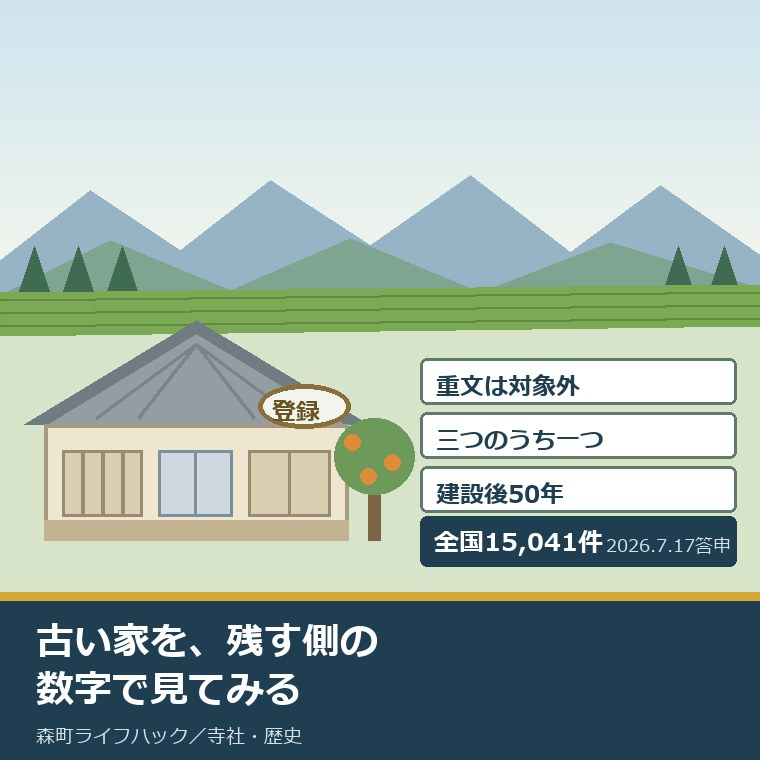
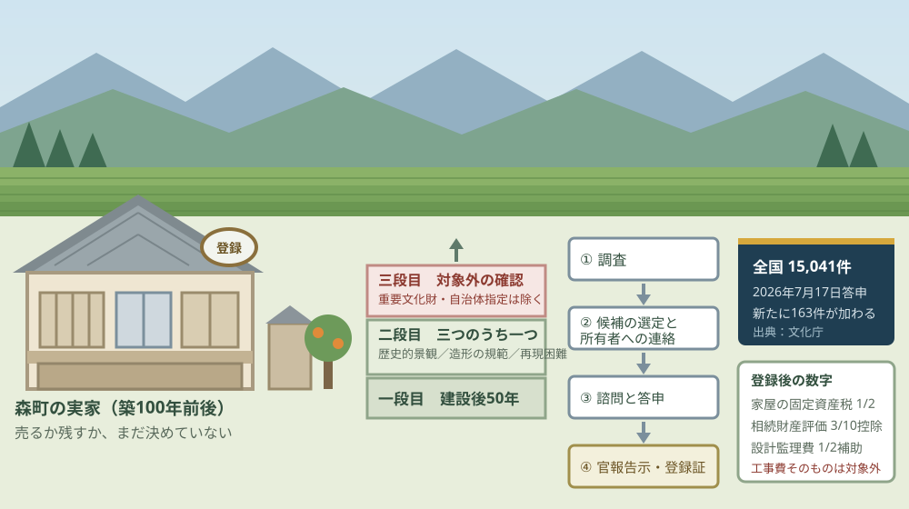
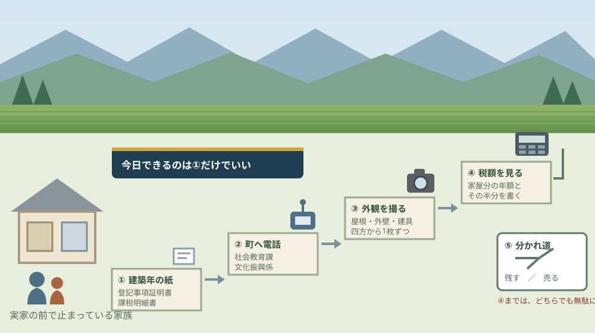

登録有形文化財1万5041件｜森町の古民家を登録する条件

この記事の要点
Q. 森町の実家が築100年近い古民家です。登録有形文化財にすると、残しやすくなりますか。
A. 残しやすくはなります。ただし国の補助が出るのは修理の設計監理費の2分の1で、工事費そのものではありません。家屋の固定資産税は2分の1、相続財産評価額は土地を含めて10分の3控除。まず森町役場の社会教育課文化振興係（0538-85-1114）へ、建築年が分かる紙を持ってご相談ください。
静岡県周智郡森町（遠州森町）の実家が、築100年前後。売るか、残すか、まだ決めていない。この記事は、その状態で止まっているご家族に向けて書いています。
2026年7月17日、文化庁が一つの答申を公表しました。文化審議会が、新たに163件の建造物を登録有形文化財に登録するよう文部科学大臣に答申したというものです。
これで登録有形文化財（建造物）は、全国で15,041件になる予定です。1万5千件という数は、この制度が特別な建物だけのものではないことを示しています。
そして同じ2026年7月17日に、森町でもう一つのことが起きていました。森町文化財保存活用地域計画が、文化庁長官の認定を受けた日です。日付が重なったのは偶然ですが、この二つは制度の上でつながっています。
今日は2026年8月26日。登録の基準、届出の義務、税の軽減、そして森町でどこへ行けばよいのかを順に並べ、最後に今日できる一歩を書きます。
公式情報から確定できること
2026年8月26日時点で、文化庁の公表資料と文化財保護法の条文から確認できたことを並べます。制度の正式な呼び名は、文化財登録制度（登録有形文化財建造物制度）です。出典は記事の末尾に載せています。
一つ目。2026年7月17日の答申で、登録有形文化財（建造物）は15,041件になる予定です。文化庁の報道発表によれば、文化審議会（会長 日比野克彦）が新たに163件の建造物を登録するよう文部科学大臣に答申し、官報告示を経て15,041件となります。
二つ目。制度が始まったのは平成8年10月1日です。文化庁によれば、平成8年10月1日に施行された文化財保護法の一部を改正する法律によって文化財登録制度が導入されました。届出制と指導・助言等を基本とする、緩やかな保護措置です。
三つ目。基準は「原則として建設後50年」です。登録有形文化財登録基準（平成8年8月30日文部省告示第152号、平成17年3月28日文部科学省告示第44号改正）は、建築物・土木構造物及びその他の工作物のうち、原則として建設後50年を経過したものを対象としています。
四つ目。50年に加えて、三つのうち一つに当てはまる必要があります。同じ基準が挙げるのは「国土の歴史的景観に寄与しているもの」「造形の規範となっているもの」「再現することが容易でないもの」の三つです。
五つ目。重要文化財は、この制度の対象から外れます。同じ基準の括弧書きは、重要文化財と、文化財保護法第182条第2項に規定する指定を地方公共団体が行っているものを除くと定めています。
六つ目。登録するのは文部科学大臣です。文化財保護法第57条第1項は、重要文化財以外の有形文化財のうち、その文化財としての価値にかんがみ保存及び活用のための措置が特に必要とされるものを文化財登録原簿に登録することができると定めています。
七つ目。効力が生じるのは官報告示の日です。同じ法の第58条第2項によれば、登録は官報の告示があった日からその効力を生じます。第58条第3項により、所有者には登録証が交付されます。
八つ目。登録までの流れに、所有者の申請という段はありません。文化庁の御案内が示す流れは、調査、登録候補物件の選定、所有者への情報提供と確認、諮問案の作成、文化審議会への諮問と答申、登録原簿への登録という順です。所有者の側からは「文化財登録原簿への登録希望」を伝える形になります。
九つ目。認定を受けた市町村は、国へ登録を提案できます。文化財保護法第183条の5第1項は、認定市町村の教育委員会が、認定文化財保存活用地域計画の計画期間内に限り、区域内の文化財で登録が適当と思料するものについて、文部科学大臣に登録を提案できると定めています。
十番目。その提案には、地方文化財保護審議会の意見聴取が要ります。同じ条の第2項は、提案をしようとするときはあらかじめ地方文化財保護審議会の意見を聴かなければならないと定めています。第3項は、登録しないこととした場合に理由を通知することを国に義務づけています。
十一番目。森町は2026年7月17日に、その「認定市町村」になりました。文化庁の「文化財保存活用地域計画」認定市町村一覧（令和8年7月17日現在）には、静岡県の欄に森町・森町文化財保存活用地域計画・令和8年7月17日と記載されています。認定は全国で253自治体です。
十二番目。現状変更の届出は、30日前までです。文化財保護法第64条第1項は、登録有形文化財の現状を変更しようとする者は、現状を変更しようとする日の30日前までに文化庁長官へ届け出なければならないと定めています。
十三番目。届出が要るのは、外観の4分の1を超えるときです。文化庁の御案内によれば、届出が必要になるのは移築する場合や、外観を変更する範囲が「通常望見できる範囲」の4分の1を超える場合などです。
十四番目。「通常望見できる範囲」は、周囲から見える外観です。同じ御案内は、周囲から見える外壁や屋根などの外観を構成する部分が該当し、他の建築物等によって通常見えない部分は該当しないと説明しています。
十五番目。内装だけの改修に、届出は要りません。同じ御案内は、変更する規模が小さく通常望見できる範囲の4分の1以下を変更する場合や、内装に限定した改修などは届出の必要がないとしています。雨漏りや壁のひび割れの補修も維持の措置に当たります。
十六番目。壊れたとき・失われたときは10日以内です。文化財保護法第61条は、滅失・き損・亡失・盗難について、その事実を知った日から10日以内に文化庁長官へ届け出なければならないと定めています。
十七番目。所有者が変わったときは20日以内です。文化庁の御案内によれば、旧所有者は登録証を新所有者に引き渡し、新所有者は20日以内に届出を行います。
十八番目。届出を怠ると過料です。同じ御案内は、滅失・き損の届出、現状変更の届出、所有者変更の届出を怠った場合や虚偽の届出をした場合について、5万円以下の過料を挙げています。文化庁長官から現状等の報告を求められて報告しない場合は10万円以下の過料です。
十九番目。家屋の固定資産税は2分の1に減税されます。同じ御案内の優遇措置の欄は「家屋の固定資産税を2分の1に減税（地方税法）」と記しています。
二十番目。相続財産の評価額は、土地を含めて10分の3控除です。同じ欄は「相続財産評価額（土地を含む）を10分の3控除（国税庁通達）」と記しています。
二十一番目。国が補助するのは設計監理費の2分の1です。同じ欄は、登録有形文化財建造物修理等補助事業として「保存・活用に必要な修理等の設計監理費の2分の1を国が補助」と記しています。工事費そのものではありません。
二十二番目。公開活用事業にも2分の1の補助があります。同じ御案内によれば、地方公共団体などが行う公開活用事業にかかる費用の2分の1を国が補助します。保存活用計画の策定、設備整備、耐震対策が対象に挙げられています。
二十三番目。技術的な助言を国に求められます。文化財保護法第66条は、所有者・管理責任者・管理団体が、登録有形文化財の管理または修理に関し文化庁長官に技術的指導を求めることができると定めています。
二十四番目。森町公式の文化財ページに、登録有形文化財の記載はありません。森町公式「文化財」のページ（2019年3月1日更新）が挙げているのは国指定文化財4件と県指定文化財で、出典は「もりまち町政要覧2001森町データファイル（別冊統計資料）より」と注記されています。
二十五番目。森町の国指定建造物は、友田家住宅です。同じページによれば、友田家住宅は建造物として昭和48年6月2日に国の指定を受けています。重要文化財であるため、登録有形文化財の登録基準の括弧書きにより、登録の対象からは外れます。
二十六番目。森町文化財保存活用地域計画の本文は公開されています。森町公式の「森町文化財保存活用地域計画の認定について」（2026年8月6日更新）に、報道資料と計画本文のPDFが掲載されています。計画期間は令和8年度から17年度までの10年間です。
二十七番目。森町が把握している文化財は、指定等116件・未指定2,417件です。同じ報道資料（令和8年3月時点）の数字です。指定や登録を受けていない歴史文化資産のほうが、20倍以上あることになります。
二十八番目。計画は、古民家を生かすまちづくりを取組に挙げています。同じ報道資料の取組33「城下の町並を生かしたまちづくりの支援」は、秋葉街道の要所であった城下について、地域住民やまちづくり団体とともに古民家等を生かしたまちづくりを支援するとしています。取組主体に所有者等が含まれます。
二十九番目。計画は、空き家と解体を課題として名指ししています。同じ報道資料は、課題の一つに「『城下の町並』が、所有者の転出等に伴い、空き家や解体による空き地が目立つようになっている」を挙げています。
三十番目。友田家住宅の茅葺き屋根の葺き替えも取組に入っています。同じ報道資料の取組16「友田家住宅の修理」は、重要文化財友田家住宅の茅葺き屋根葺き替えに対する計画作成・実施を支援するとしています。計画期間は令和8年度から17年度です。

この絵で描きたかったのは、築100年という事実だけでは、階段の一段目しか上がれないという点です。登録の可否を決めるのは、その家が何を残しているかであって、古さの数字ではありません。
もう一つ描いたのは、右側の流れに「所有者の申請」という箱が無いことです。登録は調査から始まります。だから所有者が最初にやることは、申請書を書くことではなく、町に家の存在を知らせることになります。
森町の古民家に置き換えると、何が起きるか
ここからは、公表された数字を森町の一軒に割り戻します。私の計算であることを先に断っておきます。
まず、修理の補助です。国が出すのは設計監理費の2分の1で、工事費ではありません。私の商売の感覚では、建物の修理における設計監理費は工事費の1割前後という水準です。
そう置くと、工事費1,000万円の修理で設計監理費が100万円、国の補助はその半分の50万円になります。工事費に対する割合にすると、ざっくり5パーセントです。これは森町や文化庁が公表した数字ではなく、私の概算だと断っておきます。
次に、固定資産税です。家屋の固定資産税が2分の1になります。ただし、築100年の木造住宅は評価額そのものが下がりきっているというのが、私が実務で見てきた姿です。
家屋分の年税額が2万円なら、半分で年1万円が浮く。年1万円は、茅葺きや瓦の維持費の前では小さな額です。森町で古い民家を維持する費用の実際は、友田家住宅の茅葺き修理から実家の古さを値打ちと費用に分けて見た記事に整理しました。
三つ目に、相続税です。相続財産評価額が、土地を含めて10分の3控除されます。森町の宅地が相続税評価で1,000万円なら、300万円が引かれる計算になります。
ただし、ここに前提があります。国税庁のタックスアンサーNo.4152によれば、相続税の基礎控除額は3,000万円＋600万円×法定相続人の数です。子2人なら4,200万円。この枠に収まる相続では、10分の3の控除が税額を動かしません。
つまり、税の軽減が効くかどうかは家によって違います。相続財産の総額が基礎控除を超えるかどうかを先に見ないと、この控除の値打ちは決められません。個別の判断は税理士か税務署にご確認ください。
四つ目に、全国の数を割り戻します。15,041件を47都道府県で割ると、1都道府県あたり平均320件です。文化庁の登録件数のページが示す令和2年1月1日現在の集計では、12,443件に対して関係市町村が945、1市町村あたり13.2件になります。
森町の規模で13件が多いか少ないかは、私には言い切れません。ただ、1万5千件という総数は「うちの家では無理だ」と諦める根拠にはならない水準です。
建物の記録そのものが残っていない場合の探し方は、別の記事に整理しています。建築年代や間取り、改変の根拠をどこから拾うかという話です。詳しくは森町の民家を建築年代・間取り・改変根拠で読む資料台帳の記事をご覧ください。
町の側の動きは、2026年7月に一段変わりました。認定を受けた市町村だけが、国へ登録を提案できるからです。その中身は森町文化財保存活用地域計画が2026年7月に認定されて何が変わるかを書いた記事にまとめています。
森町にどんな文化財があるかを先に見ておきたい方は、友田家住宅・次郎柿原木・三つの舞楽から森町の文化財を暮らしにつないだ記事が入口になります。登録の話は、町が何を大事にしてきたかの延長にあります。
土地の側の準備も、同時に要ります。建物を残す判断をしても、敷地の境界が不明なままでは修理も売却も止まります。森町の境界の確かめ方は畑と山の境界を地籍調査の成果で確かめる記事に書きました。
良い点：この制度の、よくできているところ
まず、文化財登録制度のよくできているところを数えます。注文の前に置くのが、私の書き方の順番です。
一つ目。規制が緩やかです。内装だけの改修に届出は要らず、外観も通常望見できる範囲の4分の1以下なら届出が不要。住みながら、使いながら残すことを前提に作られています。
二つ目。用途の変更を止めていません。文化庁の御案内は、内部を一部改装してホールやレストラン、資料館として活用する例を挙げています。指定文化財と違い、事業資産として使う道が開いています。
三つ目。数を増やす制度として設計されています。文化庁は、社会的評価を受けるまもなく消滅の危機に晒されている多種多様かつ大量の近代等の文化財建造物を後世に幅広く継承していくために作られたものだと説明しています。選び抜くのではなく、拾い上げる制度です。
四つ目。技術的な助言を国に求められます。文化財保護法第66条の技術的指導は、所有者にとって実利です。古い建物の修理は、まともな職人と設計者に出会えるかどうかで結果が変わります。
五つ目。市町村から国へ提案する道が用意されています。文化財保護法第183条の5の提案制度があることで、所有者が単独で文化庁に働きかける必要がなくなります。森町は2026年7月17日から、その提案ができる立場です。
注文したい点：実家を持つ側から見て足りないところ
その上で、一事業者として注文したい点を並べます。森町の社会教育課文化振興係が、地域計画の策定も文化財の管理も同じ係で回していることは承知の上です。
一つ目。森町公式の文化財ページが、2019年3月1日の更新で止まっています。掲載の出典は2001年の町政要覧です。2026年7月に地域計画が認定された町の入口としては、25年前の資料が最新という状態が続いています。
二つ目。登録有形文化財という区分そのものが、町のページに出てきません。国指定と県指定は並んでいますが、登録の欄がない。町内に該当する建物があるのかどうかを、所有者が町のページから判断できません。
三つ目。「うちの家を見てほしい」と言う先が示されていません。登録は調査から始まる制度である以上、所有者からの情報が入口です。その受け口が、町のページに明記されていない。
四つ目。計画本文は公開されているのに、そこへ行き着けません。本文と報道資料は「森町文化財保存活用地域計画の認定について」（2026年8月6日更新）にありますが、観光・文化の側にある「森町文化財保存活用地域計画（案）パブリックコメントについて」のページは2026年7月16日更新のまま、結果の公表を「※本計画認定後、公表予定」と書いています。同じ町の中で、古いページが新しいページを案内していません。
加えて、計画本文のPDFは15.8メガバイトです。実家のことを調べている家族が、スマートフォンで開く分量ではありません。取組33や取組16のように所有者に直接関わる項目こそ、ページ本文に見出しだけでも並べてほしいと思います。
五つ目。国の側の数字も揃っていません。文化庁の「登録有形文化財（建造物）登録件数」のページは、2026年8月26日に見た時点で令和2年1月1日現在の12,443件を掲げたままです。答申が示す15,041件との差は2,598件。同じ役所の中で、数字が6年半分ずれています。

対案・結論：今日、家族が確かめられること
結論を急がないと決めたうえで、今日から動ける順番を書きます。順番はイラストのとおりです。
| 順番 | 確かめること | 確認先 |
|---|---|---|
| 1 | 建築年が分かる紙が1枚あるか。登記事項証明書の新築年月日、固定資産税の課税明細書の建築年 | 手元の書類。無ければ法務局（登記）と森町役場税務課 |
| 2 | その家の存在を町が把握しているか。登録の候補になりうるか | 森町役場 社会教育課文化振興係 0538-85-1114 |
| 3 | 外観の写真を四方から撮る。屋根・外壁・建具・小屋組 | 手元のスマートフォン。撮影日が記録に残る形で |
| 4 | 家屋分の固定資産税は年いくらか。その半分はいくらか | 森町役場 税務課（納税通知書の家屋の欄） |
| 5 | 相続財産の総額が3,000万円＋600万円×法定相続人を超えるか | 税理士または管轄の税務署。超えない場合は10分の3控除が効かない |
| 6 | 敷地の境界と名義。地籍調査の成果があるか | 森町役場の担当課と法務局。売る場合も残す場合も要る |
1は、今日できます。探すのは1枚だけです。登記事項証明書か、固定資産税の課税明細書。建築年が「昭和以前」としか分からない家も森町には残っています。
2は、電話1本です。聞くのは2つ。この家の建築年は文化財の側から見て意味があるか、町が現地を見に来る仕組みはあるか。登録できるかどうかを、この電話で決める必要はありません。
3は、30分で終わります。四方から外観を撮っておくと、後で誰かに相談するときの共通言語になります。屋根を葺き替えたあとでは、元の姿を証明できません。
4は、納税通知書を開くだけです。家屋分の年税額を見て、その半分を書き出してください。2分の1の減税が、自分の家計でいくらの話なのかが分かります。
5は、税理士か税務署です。基礎控除を超えない相続では、10分の3の控除は税額を変えません。ここを確かめずに「相続税が安くなるから登録しよう」と決めるのは、順番が逆です。
6は、残す場合も売る場合も必要になります。境界と名義は、どちらの結論でも先に要る材料です。ここが揃っていれば、判断を来年に延ばしても損はしません。
家族に残す記録
ここからは、確認した内容を紙1枚に残すための項目です。相続人が複数いる場合、同じことを何度も聞き直さないためのものです。
書き留めるのは、建築年とその根拠になった書類名、町に電話した日と担当係、外観写真を撮った日、家屋分の固定資産税の年額、相続財産の概算総額と法定相続人の数、確認した日付です。この6つで、登録の話を次の集まりまで持ち越せます。
あわせて、実家の名義と地番、敷地の境界の状況、屋根の葺き替え歴と時期、増築や改装の年、住んでいない期間、火災保険の満期日、農地や山林の有無を並べておきます。文化財の話は建物の話ですが、その先は必ず名義と境界の話になります。
実家の名義、境界、農地、道路まで含めて順に整理したい方は、ふじがおか実家カルテの森町相談窓口もご利用ください。住所が分かれば、建物と敷地のどちらについても、確認する順番を整理できます。
大石の視点
ここからは、私（大石浩之）の個人の考えです。公的な事実とは分けてお読みください。私自身が森町で登録有形文化財の登録手続きに立ち会った経験があるわけではありません。以下は、告示と条文と御案内を、家計と段取りの目で読んだ私の見方です。
最初に、はっきり書いておきます。登録有形文化財は、家を残す制度ではなく、外観を残す制度です。届出が要るのは通常望見できる範囲の4分の1を超える変更で、内装は自由。守られているのは、道から見える姿です。
これは批判ではありません。むしろ、住み続けるための現実的な線引きだと私は考えています。台所も風呂もトイレも直せない制度なら、誰も手を挙げません。
その上で、費用の話をします。国の補助は設計監理費の2分の1です。工事費1,000万円の修理に対して50万円前後という私の概算が当たっているなら、これは修理費の穴を埋める額ではありません。
固定資産税の2分の1も、額としては年1万円前後の世界です。森町の古い民家で、屋根一面を直せば数百万円が動く。その桁の前では、税の軽減は決め手になりません。
正直に書くと、私はここで迷っています。数字だけを並べると、登録の実利は薄い。それでも「登録しない方がいい」と言い切る気にはなれません。
理由は、私の商売で見てきた景色にあります。森町で古い家が消えるとき、たいてい理由は一つです。誰も、その家に値打ちがあると言わなかったからです。
相続人が三人いて、全員が県外にいる。維持費は毎年出ていき、誰も住まない。そこへ「壊せば更地で売れます」という提案だけが届けば、答えは決まります。
登録有形文化財のプレートは、そこに「壊す以外の選択肢がある」という一枚の紙を差し込みます。私は、その一枚に意味があると考えています。金額に換算できないものを、この仕事では何度も見てきました。
ここで、森町の側の話をします。まず認めたいのは、町がすでに払っている手間のことです。2026年7月17日に地域計画が認定されるまでには、調査があり、案の作成があり、パブリックコメントがありました。
1万5千人ほどの町で、社会教育課文化振興係が国指定の舞楽三件と国指定の民家、県指定13件を抱えながら、法定計画を一本仕上げている。これは、外から軽く見てよい仕事量ではありません。
その上で、打開が要ると思う点を具体名詞で書きます。担い手と、後継と、空き家です。森町の古民家を残すために足りないのは、制度でも予算でもなく、「この家は残す値打ちがある」と最初に言う人だと私は見ています。
登録の流れに所有者の申請という段がない以上、その最初の一声は、町か、県か、調査に入る研究者から出ます。だから、町のページに「うちの家を見てほしい」と言える窓口が書かれていないことが、私にはいちばん惜しい。
もう一つ、惜しいと思うことがあります。町の文化財ページの出典が2001年の資料のままだということです。認定を受けた今年こそ、そこを書き換える理由が立ちます。
行政に注文を付ける前に、自分の商売で同じことができるか考える。私も、扱った物件の記録を更新しないまま何年も置いていることがあります。古い情報を直す仕事は、誰にとっても後回しになります。
一事業者としての要望は、一つだけです。文化財のページに、電話番号と一緒に「町内の古い建物について情報をお寄せください」の一行を添えてほしい。それだけで、実家を前に立ち止まっているご家族の行き先が決まります。
最後に、判断そのものについて。今日、登録を目指すかどうかを決める必要はありません。ただ、建築年が分かる紙1枚と、外観の写真だけは、今日のうちに手元に置いてください。
この二つがあれば、残すにしても売るにしても、話が最初からやり直しになりません。結論が保留のままでも、確認済みの事実が二つ増えたなら、それは前進です。
まとめ
- 文化庁の報道発表によれば、2026年（令和8年）7月17日に文化審議会が163件の建造物の登録を答申し、登録有形文化財（建造物）は15,041件となる予定
- 登録有形文化財登録基準（平成8年8月30日文部省告示第152号、平成17年3月28日改正）は「原則として建設後50年を経過し」たものを対象とする
- 加えて「国土の歴史的景観に寄与しているもの」「造形の規範となっているもの」「再現することが容易でないもの」の一つに該当することが要る
- 重要文化財と、地方公共団体が文化財保護法第182条第2項の指定を行っているものは対象から除かれる
- 文化財保護法第64条第1項により、現状変更は変更しようとする日の30日前までに文化庁長官へ届出
- 文化庁の御案内によれば、届出が要るのは移築や、外観を変更する範囲が「通常望見できる範囲」の4分の1を超える場合など
- 4分の1以下の変更、内装に限定した改修、雨漏りやひび割れの補修は維持の措置にあたり、届出は不要
- 滅失・き損は知った日から10日以内（文化財保護法第61条）、所有者変更は20日以内に届出
- 届出を怠った場合などは5万円以下の過料、報告を怠った場合は10万円以下の過料
- 優遇措置は、家屋の固定資産税を2分の1に減税（地方税法）、相続財産評価額を土地を含めて10分の3控除（国税庁通達）
- 国の補助は「保存・活用に必要な修理等の設計監理費の2分の1」であり、工事費そのものではない
- 私の概算では、設計監理費が工事費の1割前後なら、工事費1,000万円の修理に対する国の補助は50万円前後（工事費の約5パーセント）
- 国税庁タックスアンサーNo.4152によれば相続税の基礎控除額は3,000万円＋600万円×法定相続人の数で、この枠に収まる相続では10分の3控除が税額を動かさない
- 文化財保護法第183条の5により、認定市町村の教育委員会は計画期間内に限り文部科学大臣へ登録を提案できる
- 文化庁の認定市町村一覧（令和8年7月17日現在・253自治体）に、静岡県森町と森町文化財保存活用地域計画が令和8年7月17日認定として記載されている
- 森町公式「文化財」ページ（2019年3月1日更新）は出典を2001年の町政要覧とし、登録有形文化財の区分を掲載していない
- 森町の国指定建造物である友田家住宅（昭和48年6月2日指定）は重要文化財のため、登録有形文化財の対象からは外れる
- 森町公式「森町文化財保存活用地域計画の認定について」（2026年8月6日更新）に報道資料と計画本文のPDFが掲載され、計画期間は令和8年度から17年度までの10年間
- 同じ報道資料（令和8年3月時点）によれば、森町が把握している文化財は指定等116件・未指定2,417件
- 同じ報道資料の取組33「城下の町並を生かしたまちづくりの支援」は、古民家等を生かしたまちづくりの支援を掲げ、取組主体に所有者等を含めている
- 同じ報道資料は課題として「『城下の町並』が、所有者の転出等に伴い、空き家や解体による空き地が目立つようになっている」を挙げている
- 同じ報道資料の取組16「友田家住宅の修理」は、重要文化財友田家住宅の茅葺き屋根葺き替えに対する計画作成・実施の支援を掲げている
- 文化庁の「登録有形文化財（建造物）登録件数」のページは、2026年8月26日時点で令和2年1月1日現在の12,443件を掲げている
よくある質問
Q1. 築100年の古民家なら、申請すれば登録有形文化財になりますか。
A1. 築年数だけでは決まりません。登録有形文化財登録基準（平成8年8月30日文部省告示第152号）は、原則として建設後50年を経過し、かつ「国土の歴史的景観に寄与しているもの」「造形の規範となっているもの」「再現することが容易でないもの」の一つに該当するものとしています。手続きも所有者の申請ではなく、調査を経た文化審議会への諮問と答申です。森町では社会教育課文化振興係（0538-85-1114）が窓口です。
Q2. 登録有形文化財になると、家に手を入れられなくなりますか。
A2. 内装だけの改修なら届出も不要です。文化庁の御案内によれば、現状変更の届出が必要になるのは移築する場合や、外観を変更する範囲が「通常望見できる範囲」の4分の1を超える場合などで、その場合も変更しようとする日の30日前までの届出です。4分の1以下の変更や雨漏り・ひび割れの補修は維持の措置にあたり、届出は要りません。
Q3. 登録すると、修理費はいくら国から出ますか。
A3. 工事費そのものではなく、設計監理費が対象です。文化庁の御案内は、保存・活用に必要な修理等の設計監理費の2分の1を国が補助すると記しています。工事費の1割前後が設計監理費という私の概算で言えば、1,000万円の修理なら国の補助は50万円前後にとどまります。税の軽減は家屋の固定資産税が2分の1、相続財産評価額が土地を含めて10分の3控除です。
最後に一つだけ。ここに書いた件数、基準、届出の期限、過料の額、税の軽減は、いずれも2026年8月26日時点で公表されている内容です。森町内に登録有形文化財（建造物）が現に何件あるか、森町文化財保存活用地域計画に登録の提案がどう位置づけられたか、町が所有者からの情報をどの様式で受けているか、地方文化財保護審議会が森町に置かれているかは、公表資料からは確認できていません。動く前に、森町役場の社会教育課文化振興係へご確認ください。
参考にした公式情報
- 文化審議会の答申（登録有形文化財（建造物）の登録）／文化庁（答申が令和8年7月17日（金曜日）であること、文化審議会の会長が日比野克彦であること、「新たに163件の建造物を登録するよう文部科学大臣に答申」したこと、「この結果、官報告示を経て」「登録有形文化財（建造物）は15,041件となる予定」と記されていること、担当が文化庁建造物課（電話075-451-4111）であること、詳細が別紙の概要と一覧表のPDFに掲載されていることを2026年8月26日に確認）
- 登録有形文化財登録基準／文化庁（平成8年8月30日文部省告示第152号として定められ平成17年3月28日文部科学省告示第44号で改正されていること、本文が「建築物，土木構造物及びその他の工作物（重要文化財及び文化財保護法第182条第2項に規定する指定を地方公共団体が行っているものを除く。）のうち，原則として建設後50年を経過し，かつ，次の各号の一に該当するもの」であること、各号が「国土の歴史的景観に寄与しているもの」「造形の規範となっているもの」「再現することが容易でないもの」であることを2026年8月26日に確認）
- 登録有形文化財建造物制度の御案内／文化庁（2020年3月版であること、文化財登録制度が平成8年に誕生したこと、優遇措置として「保存・活用に必要な修理等の設計監理費の2分の1を国が補助」「地方公共団体などが行う公開活用事業にかかる費用の2分の1を国が補助」「相続財産評価額（土地を含む）を10分の3控除（国税庁通達）」「家屋の固定資産税を2分の1に減税（地方税法）」が挙げられていること、現状変更の届出が「現状変更しようとする日の30日前までに届出」であり移築や外観を変更する範囲が通常望見できる範囲の4分の1を超える場合などが該当すること、通常望見できる範囲が周囲から見える外壁や屋根などの外観を構成する部分であり他の建築物等によって通常見えない部分は該当しないこと、届出が必要ない場合として維持の措置（4分の1以下の変更、内装のみの模様替え、雨漏りや壁のひび割れといった毀損の補修工事）と非常災害のために必要な応急措置が挙げられていること、滅失と毀損は事実を知った日から10日以内、所有者の変更は20日以内の届出であること、主要な罰則が5万円以下の過料（滅失・毀損・現状変更・所有者変更の届出違反、登録証の引渡し・返付の違反）と10万円以下の過料（現状等の報告違反）であること、登録までの流れが調査・登録候補物件の選定・登録候補物件の情報提供と確認・諮問案の作成・文化審議会への諮問と答申・文化財登録原簿への登録・官報告示と登録証および登録プレートの交付であること、所有者の側の入口が「文化財登録原簿への登録希望」であることを2026年8月26日に確認）
- 登録有形文化財（建造物）／文化庁（文化財登録制度が「平成8年10月1日に施行された文化財保護法の一部を改正する法律によって」導入されたこと、「届出制と指導・助言等を基本とする緩やかな保護措置を講じるもの」であること、「社会的評価を受けるまもなく消滅の危機に晒されている多種多様かつ大量の近代等の文化財建造物を後世に幅広く継承していくために作られたもの」と説明されていることを2026年8月26日に確認）
- 登録有形文化財（建造物）登録件数／文化庁（2026年8月26日に確認した時点で基準日が「令和2年1月1日現在」であり、合計が12,443件、関係都道府県が47、関係市町村（区）が945、建設年代の内訳が江戸以前2,220件・明治3,965件・大正2,543件・昭和3,715件と示されていることを2026年8月26日に確認）
- 文化財保護法（昭和二十五年法律第二百十四号）／e-Gov法令検索（第57条第1項が文部科学大臣による文化財登録原簿への登録を定めていること、第57条第2項ただし書が第183条の5第1項の規定による登録の提案に係るものについて関係地方公共団体の意見聴取を要しないとしていること、第58条第2項が「官報の告示があつた日からその効力を生ずる」としていること、第58条第3項が登録証の交付を定めていること、第61条が滅失・き損・亡失・盗難について「その事実を知つた日から十日以内に文化庁長官に届け出なければならない」としていること、第64条第1項が「現状を変更しようとする日の三十日前までに」の届出を定め維持の措置と非常災害のために必要な応急措置を除いていること、第66条が管理または修理に関する技術的指導を文化庁長官に求めることができるとしていること、第183条の5第1項が認定市町村の教育委員会は認定文化財保存活用地域計画の計画期間内に限り文部科学大臣に対し文化財登録原簿への登録を提案することができるとしていること、同条第2項が地方文化財保護審議会の意見聴取を義務づけていること、同条第3項が登録しないこととしたときの理由の通知を定めていることを2026年8月26日に確認）
- 文化財／静岡県森町（国指定文化財として友田家住宅（建造物、昭和48年6月2日指定）と小國神社十二段舞楽・天宮神社十二段舞楽・山名神社天王祭舞楽（いずれも昭和57年1月14日指定）が挙げられていること、県指定文化財として工芸・絵画書跡・天然記念物・建造物・民俗が挙げられていること、登録有形文化財の区分が掲載されていないこと、出典が「もりまち町政要覧2001森町データファイル(別冊統計資料)より」と注記されていること、担当が社会教育課文化振興係（電話0538-85-1114）であることを2026年8月26日に確認。ページ更新日 2019年3月1日）
- 森町文化財保存活用地域計画（案）パブリックコメントについて／静岡県森町（「森町では地域の歴史文化資産を保存・活用するため、『森町文化財保存活用地域計画』の策定を進めています。」とされていること、「本計画は『文化財保護法』第183条の3に基づく法定計画として、『静岡県文化財保存活用大綱』を勘案して作成するもので、『森町総合計画』の分野別計画に位置づけます。」と説明されていること、意見の募集期間が令和7年11月28日から令和7年12月12日であったこと、「森町文化財保存活用地域計画（案）の公開は終了しました。」とされていること、結果の公表が2026年8月26日時点でも「※本計画認定後、公表予定」と書かれたままで、認定を伝える別ページへの案内が置かれていないこと、担当が社会教育課文化振興係（〒437-0215 静岡県周智郡森町森92-1、電話0538-85-1114）であることを2026年8月26日に確認。ページ更新日 2026年7月16日）
- 森町文化財保存活用地域計画の認定について／静岡県森町（「令和8年7月17日に開催された国の文化審議会文化財分科会の答申を受けて、文化庁長官により『森町文化財保存活用地域計画』が認定されました。」と記されていること、本計画が「『文化財保護法』第183条の3に基づく法定計画として『静岡県文化財保存活用大綱』を勘案して作成するもので、森町の文化財全般の保存と活用について総合的な方針や取組を定めるもの」と説明されていること、報道資料（PDFファイル: 1.9MB）と森町文化財保存活用地域計画本文（PDFファイル: 15.8MB）が掲載されていること、担当が社会教育課文化振興係（〒437-0215 静岡県周智郡森町森92-1、電話0538-85-1114）であることを2026年8月26日に確認。ページ更新日 2026年8月6日）
- 森町文化財保存活用地域計画 報道資料／静岡県森町（計画期間が「令和8～17年度（10年間）」であること、面積が133.91平方キロメートル、人口が約1.7万人と記されていること、「指定等文化財１１６件、未指定文化財２,４１７件把握」と令和8年3月時点の数字が記されていること、取組16「友田家住宅の修理」が「重要文化財友田家住宅の茅葺き屋根葺き替えに対する、計画作成・実施を支援する。」とされ計画期間がR8～17であること、取組33「城下の町並を生かしたまちづくりの支援」が「秋葉街道の要所であった城下について、地域住民やまちづくり団体とともに、古民家等を生かしたまちづくりを支援する。」とされ取組主体に所有者等が含まれること、課題として「『城下の町並』が、所有者の転出等に伴い、空き家や解体による空き地が目立つようになっている。」が挙げられていること、基本方針が「1. 知る」「2. 守る」「3. 広める」「4. 生かす」の四つであることを2026年8月26日に確認）
- 各地方公共団体が作成した「文化財保存活用地域計画」／文化庁（一覧の見出しが「『文化財保存活用地域計画』認定市町村一覧（令和8年7月17日現在）」であること、「令和8年7月17日現在で、253自治体の文化財保存活用地域計画が認定されています」と明記されていること、静岡県の欄に「森町」「森町文化財保存活用地域計画」「令和8年7月17日」と記載されていることを2026年8月26日に確認）
- No.4152 相続税の計算／国税庁（遺産に係る基礎控除額が「3,000万円 ＋ 600万円 × 法定相続人の数」であること、令和7年4月1日現在の法令等に基づく内容であることを2026年8月26日に確認）

最終確認日：2026-08-26 ／ 本記事は公表情報と執筆者の見解を分けて記載しています。森町内の登録有形文化財（建造物）の件数、森町文化財保存活用地域計画の本文（15.8メガバイトのPDF）に登録の提案がどう位置づけられたか、町が所有者からの情報を受ける様式、森町に地方文化財保護審議会が置かれているかは、確認できていません。制度・数値は変更されることがあります。税務・登記の個別判断は税理士・司法書士へ、登録の可否は森町役場の社会教育課文化振興係へご確認ください。